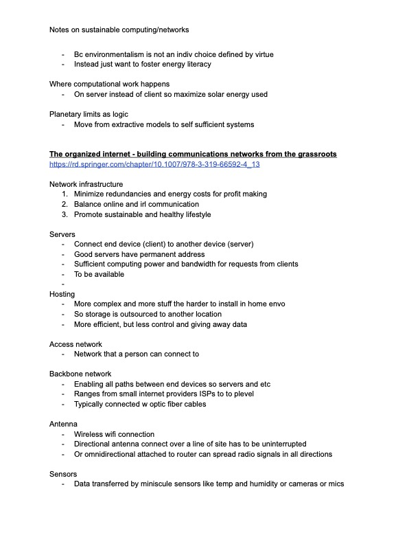

Research


This is the first stage of my project. I looked at similar projects and other resources that spoke on sustainable web development. I used this information to guide my own project.
Pages
I used sustainable web principles to guide the design of the website. The goal is to create a site that uses as little energy as possible while still being functional and enjoyable to use. This is my current prototype.
Implementation
I have not begun the process of building my server. Currently I am communicating with the architecture advisory counsel to get my changes to a building approved, as I will be mounting a solar panel to the window.